Malachite
Malachite Renewal Serum
为不稳定、泛红与毛孔粗糙时刻而设，帮助肌肤回到更平衡的状态。
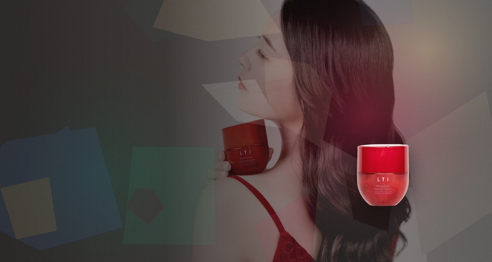
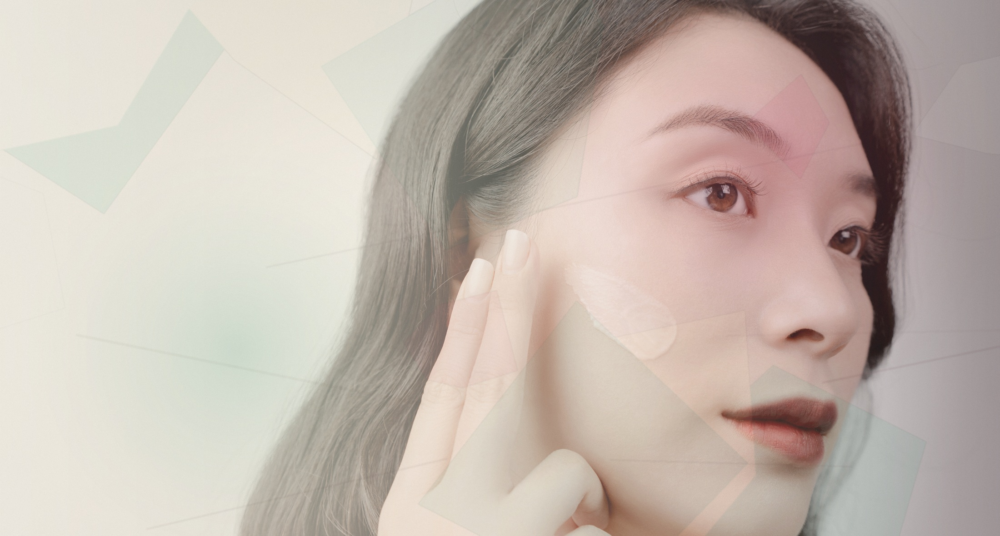
The First Touch
轻盈质地贴近肌肤，带来被光包裹的细腻触感。每一次护理，都是从肤感、光泽与气息开始的私人仪式。
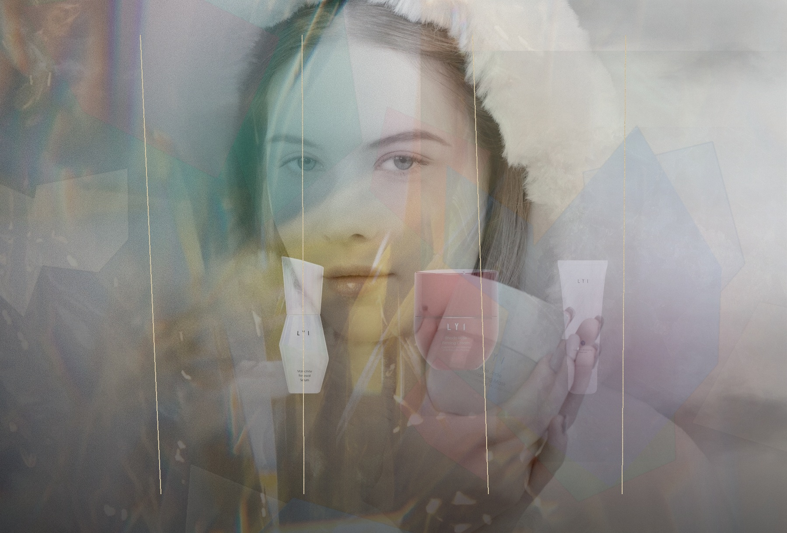
The Name · Liu-li
“璃”取意于琉璃的通透、折射与手工温度。品牌将这种光感转译为护肤体验： 细腻、柔亮、有层次，让日常护理拥有近似珠宝佩戴的仪式记忆。
LYI Icons
从修护、净澈到紧致与急救，每一款产品都拥有清晰的肤感角色与宝石灵感。
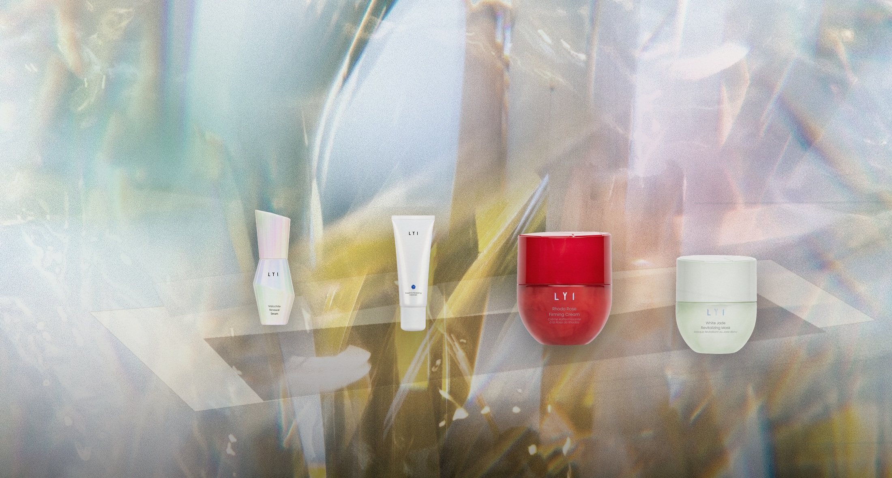
Malachite
为不稳定、泛红与毛孔粗糙时刻而设，帮助肌肤回到更平衡的状态。
Sapphire
温和带走日间负担，保留洗后洁净、柔软、不过度紧绷的肤感。
Rhodo Rose
以丰润触感包裹肌肤，回应紧致、淡纹与轮廓光泽需求。
White Jade
用于倦怠、暗沉与干燥时刻，为肌肤补回清透与舒缓光泽。
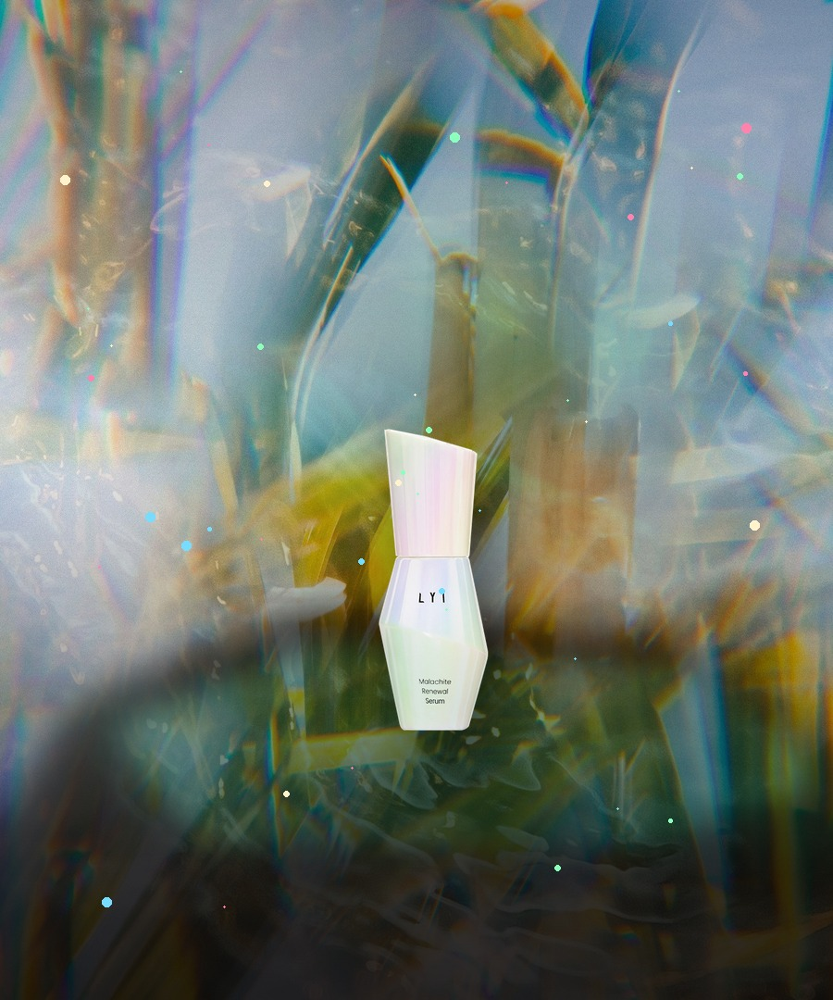
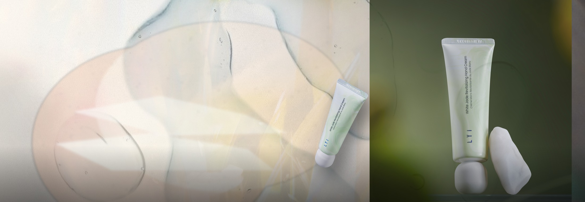
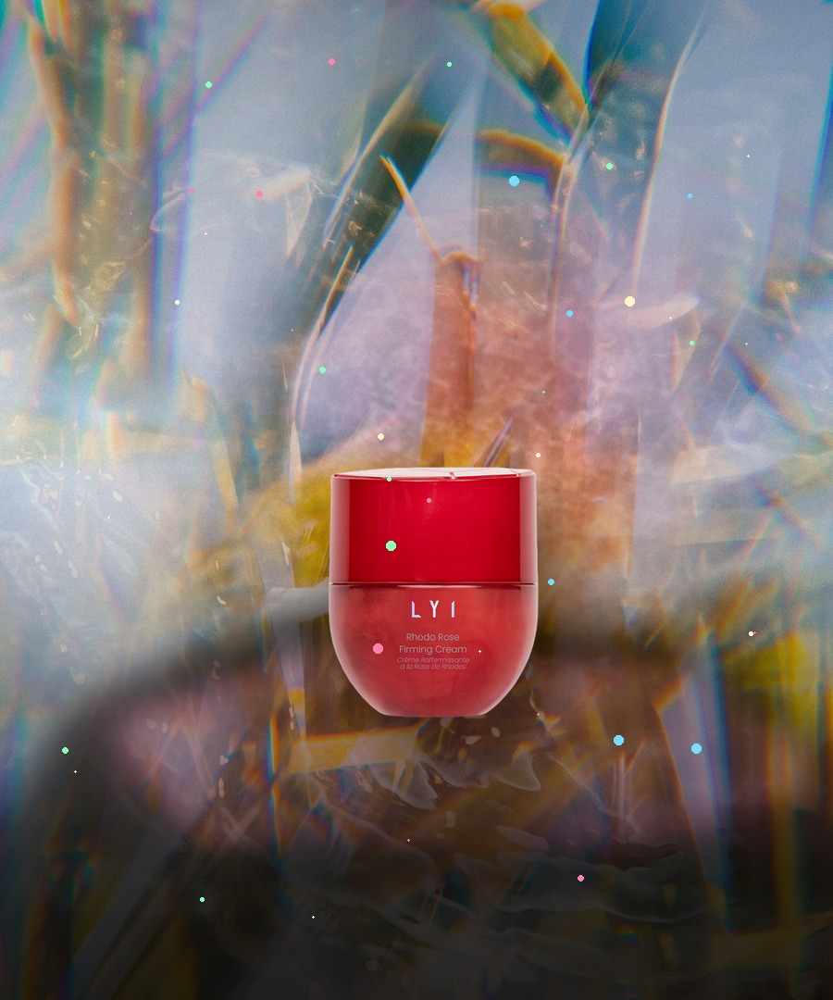
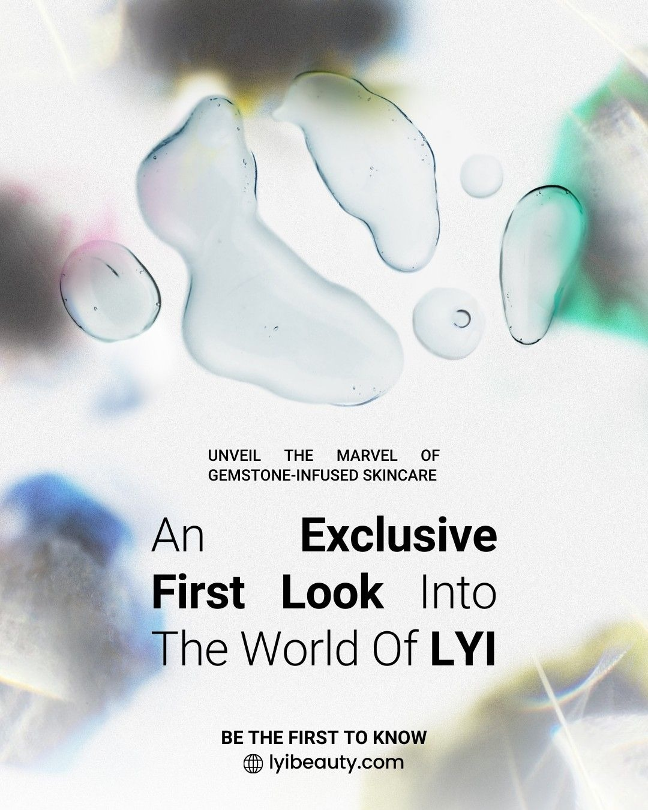
Texture & Skin
乳霜、精华与洁面质地在不同肌肤时刻展开：轻盈、润泽、包裹与舒缓，形成可被感知的奢华护理层次。
Gemstone Atelier
孔雀石回应修护与平衡，蓝宝石带来净澈秩序，红纹石强调紧致与柔光，白玉则承接急救、舒缓与焕亮时刻。 产品记忆不只来自功效，也来自颜色、触感与仪式感。
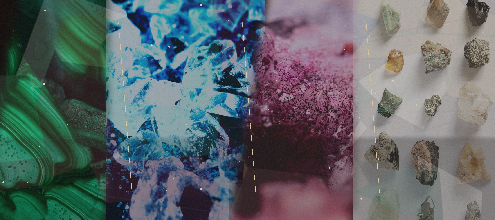
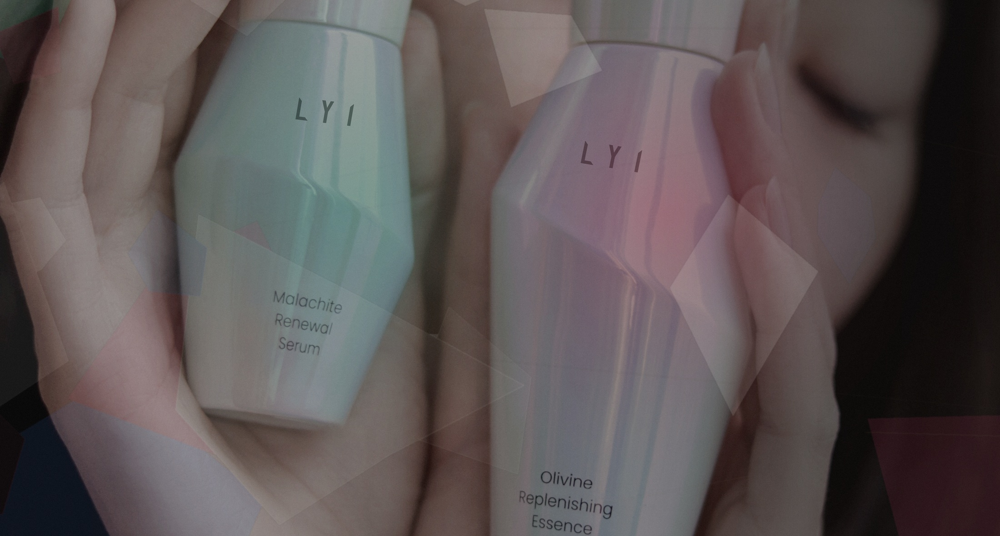
Skin as Jewellery
LYI 璃关注涂抹时的触感、护理后的光泽与肌肤轮廓的细腻变化。 当功效与美感同时成立，护肤不再只是步骤，而是一件每天佩戴的光。
查看科技背书MMC75 Technology
MMC75 护肤科技围绕屏障修护、舒缓保湿、紧致淡纹与焕亮肤感展开。 以更温和、可持续的方式，帮助肌肤呈现稳定、细腻、富有光泽的状态。
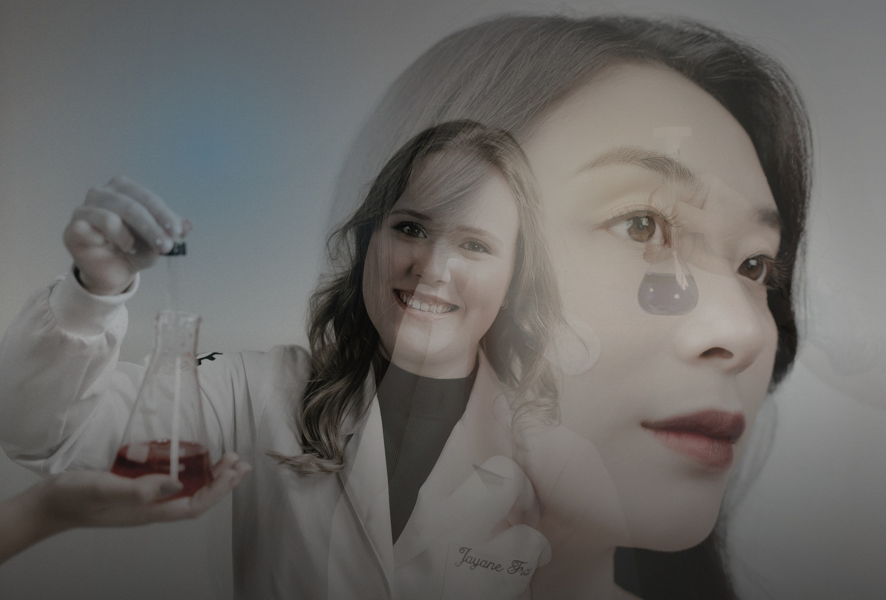
Recognition
从产品设计到美妆奖项，LYI 璃以可验证的荣誉与资料，建立更清晰的品牌信任。
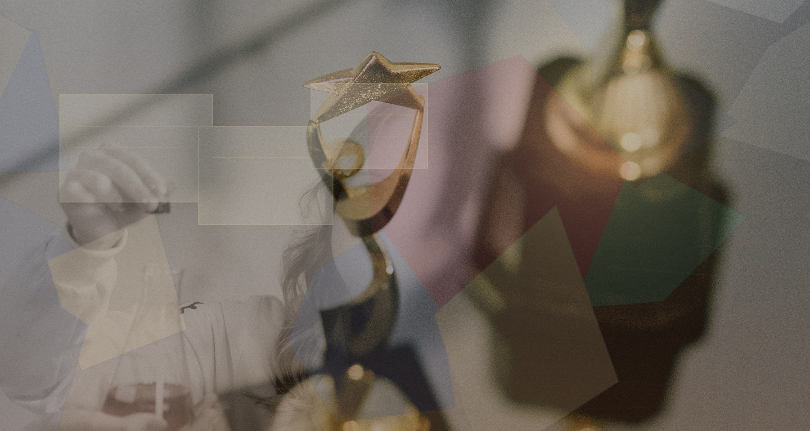
以创新技术与产品研发能力，建立品牌底层信任。
以包装结构、视觉语言与使用体验，呈现艺术护肤定位。
覆盖抗老、奢华精华与洁面等多个核心产品方向。
为高端护理场景与国际美妆传播提供更多可信背书。
Private Consultation
根据肌肤当下状态与护理节奏，找到适合的修护、紧致、焕亮或舒缓方案。